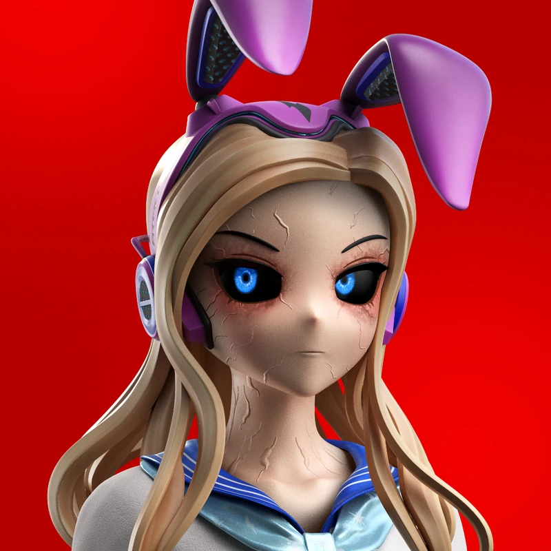

01 · 這支片在做什麼她有三種樣子
Bunny 的官方 DNA 是惡魔，官方的描述只有一句：「從黑暗召喚而來」。UCX 從這句話延伸出一個設定：她平常用人類的樣子生活，那是偽裝；官方頭像上的樣子，是惡魔的「平時」；遇到危險時，還有第三種樣子。
| 樣子 | 眼睛 | 皮膚 | 在片中 |
|---|---|---|---|
| 人類偽裝 | 正常的白色眼白、藍色眼睛 | 健康膚色，沒有裂紋 | 夜街上散步的開場 |
| 平時（官方頭像） | 深色眼白、藍色眼睛 | 瓷白，帶隱約裂紋 | 片尾的回眸 |
| 力量解放 | 發紅光 | 裂紋亮成紅色，往外蔓延 | 變身與擊退無人機 |

這也是一支賽前彩排作品，用來練習「變身」這種最容易讓角色走樣的題材：前後兩種樣子差很多，觀眾卻要一眼認出是同一個人。
02 · 故事節拍30 秒，七個段落
- 0–2.5 秒眼睛特寫，紅光一閃
人類樣子的藍眼睛，眨眼的瞬間有一道紅光掠過。開場先給一個不安的細節：她不是普通人。
- 2.5–5.5 秒雨夜街頭，走向巷口
霓虹、濕亮的路面，她放鬆地走著，鏡頭跟在旁邊，一路走到巷口。輕鬆的這幾秒，是為了和後面形成反差。
- 5.5–8.5 秒無人機圍上來
無人機降下，紅色的光鎖定她。一道紅色爆閃，畫面切走。
- 8.5–16.5 秒她還站在那裡，然後變身
爆閃過後是空巷，她毫髮無傷、雙手垂著站在原地。接著裂紋亮起、眼睛轉紅，變成力量解放的樣子。這段刻意放慢。
- 16.5–21.5 秒衝擊波擊退無人機
低角度鏡頭，一陣衝擊波推出去，一台無人機被擊中、迸出火花後爆炸。
- 21.5–25 秒回眸
她回頭看向鏡頭，已經是官方頭像那個樣子：深色眼白、瓷白皮膚上的裂紋。
- 25–30 秒片名
BUNNY AWAKENS。
03 · 做的時候學到的事30 秒，改了好幾輪
- 只給頭像，角色會變成大頭的 Q 版
有一輪畫面整批變成頭大、臉圓、眼睛超大的 Q 版。原因是當時只給了頭肩的頭像當依據，看不到身體。之後全身的畫面一定附全身參考；檢查時也要看身材比例和臉型，不能只對五官。
- 改不了的鏡頭，就從前一鏡去接
變身那一段早就做好了，第一格是空巷、她雙手垂著；前一鏡卻有無人機和紅光，直接接上去像剪錯。解法是在接點加一道爆閃，讓觀眾讀成「攻擊打過來了，她連躲都沒躲」。原本的接不上，反而成了全片最帥的一拍。
- 後製加的東西，不一定加分
原本在開頭疊了紅色瞄準框、在後段加了一道紅線。看片時兩樣都被判定多餘，最後全部拿掉，只留畫面裡本來就有的紅光。
- 畫面出錯，不一定要重做
有一台無人機被擊中後，看起來像分裂成兩台。沒有重新生成，而是剪掉出錯的那幾格，把前面的動作放慢補回長度。
- 爆炸要有聲音
有一版混音整個被退回，最明顯的問題是無人機爆炸完全沒聲音。重做成稀疏、帶點暗黑工業感的配樂，加上跟著畫面事件走的音效；爆炸前先把聲音抽空一下，炸的那一刻才夠重。配樂另外比了三個方向，才選定現代電子感那一首。
- 30 秒，不必每一秒都生成
變身那段原本只有約 5 秒，放慢成 8 秒；開頭和回眸各停格半秒；最後 5 秒是片名卡。剪接能補的長度，就不必多生成。
更完整的製作流程，另見技術專欄〈AI 影片不是輸入一句話就好〉。